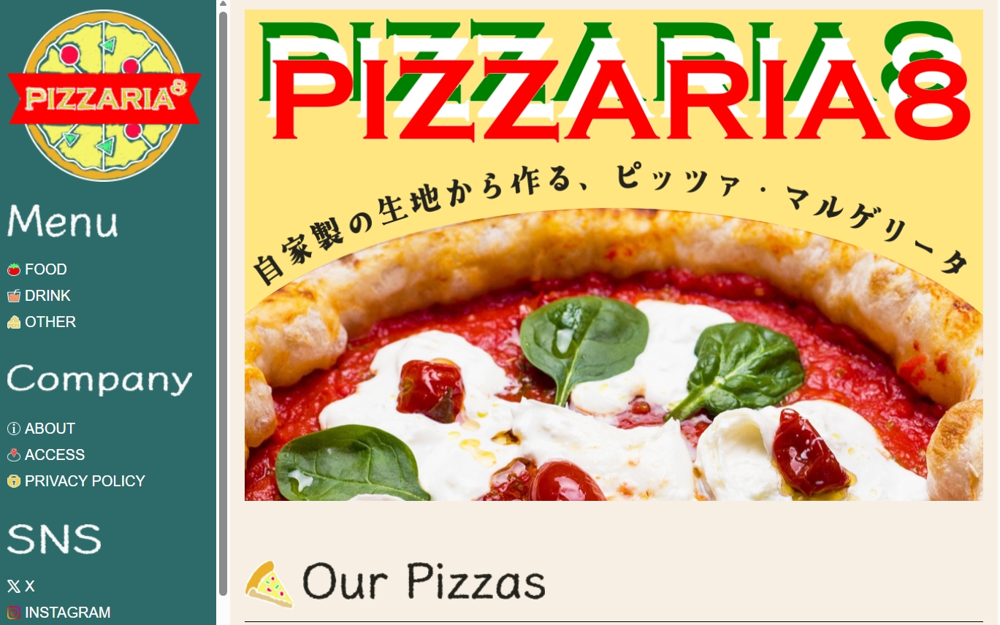
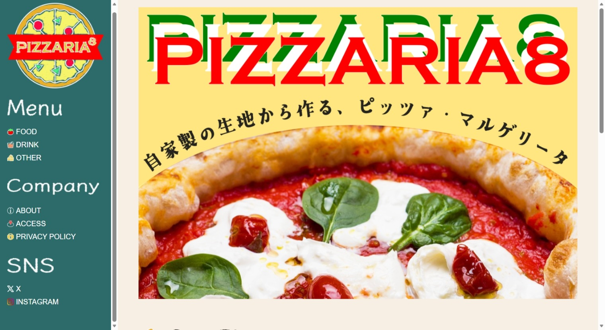
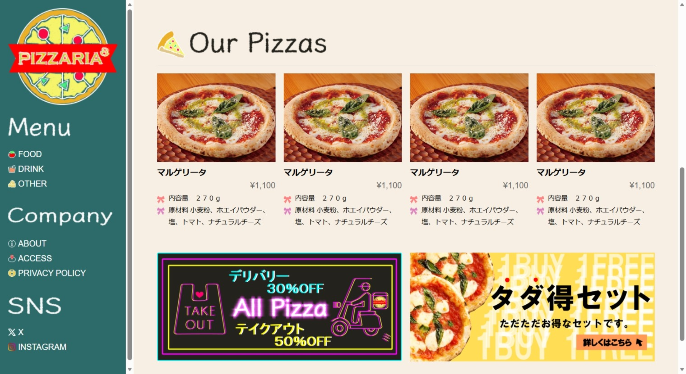
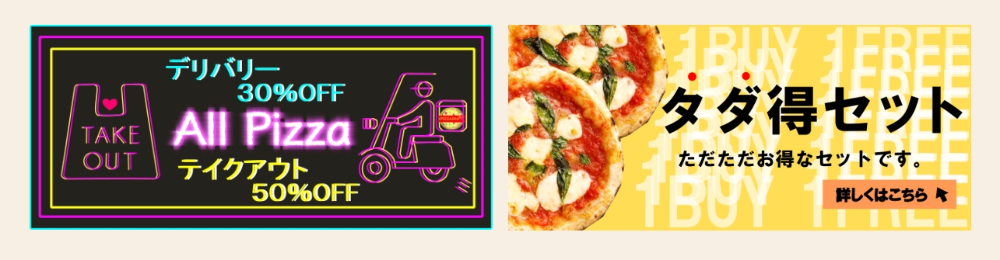

← 制作物一覧へ戻る
← 制作物一覧へ戻る
ピザ専門店 ブランドツール（ロゴ・アイコン・バナー）

| 使用技術 | HTML / CSS / Inkscape / GIMP |
|---|---|
| 制作目的 |
架空のピザ専門店のオフィシャルサイト制作に伴い、ブランドの顔となるロゴ、各種アイコン、およびバナー2種（メイン・お知らせ用）を一貫して制作。
お店の「親しみやすさ」と「自家製のこだわりの美味しさ」をWeb上で視覚的に伝えることを目的 |
| 制作期間 | 1週間（2026年3月） |
デザインのこだわった点
-
ロゴ・各種アイコン
アットホームな雰囲気を出すため「チョークアート風（手描き風）」のデザインに仕上げました。小さい画面で表示されても視認性を損なわないよう、白の枠線をあえて濃く・太く調整し、一目で何のアイコンか識別できるよう工夫しています。
-
メインバナー
主役であるピザを最も美味しく見せるため、GIMPを用いて色彩・コントラストを鮮やかにレタッチしました。さらに、ピザの丸い形状（半円）に沿うようにテキストを美しく配置し、ダイナミックで目を引く構図にこだわっています。
-
お知らせバナー
イベントや最新情報を伝えるため、視認性の高い「ネオン風」のデザインを採用しました。バナー内のテキストは極限まで短くシンプルな短文にまとめ、ユーザーが一目で内容を理解できるよう配慮しています。
コーディングの工夫と成果
お知らせバナーには、デザインだけでなく実装（HTML/CSS）の工夫も取り入れました。ユーザーがマウスを乗せた際（ホバー時）に、ネオンにさらに光が灯るように色味がプラスされるアニメーション効果を実装。思わずクリックしたくなるような、視覚的に楽しいUI設計を意識しました。
TOP PAGE BANNER

MENU PAGE

BANNER
